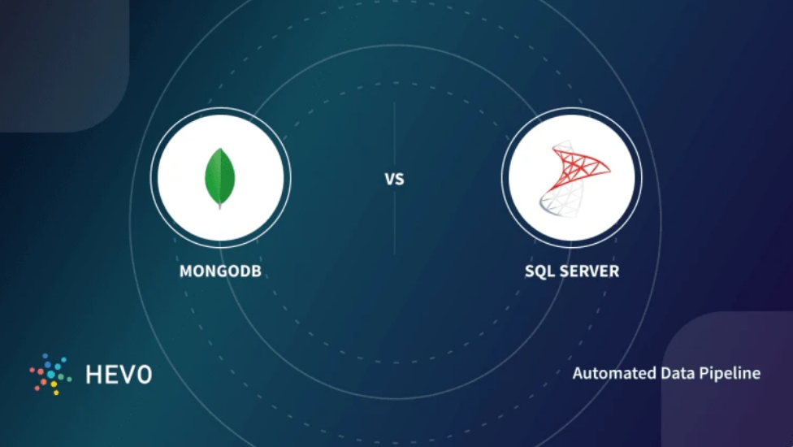
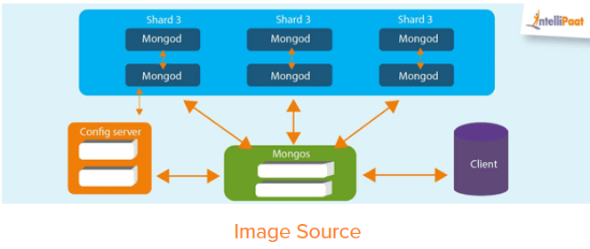
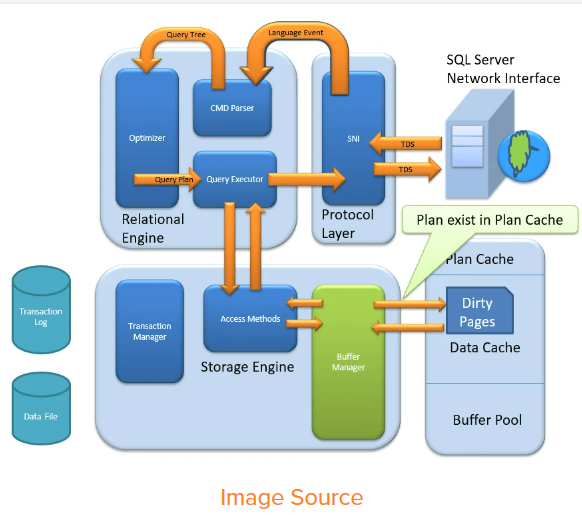

MongoDB vs SQL Server: Which is Better?
[10 Critical Differences]
Nidhi B. on Database Management Systems, Microsoft SQL Server, MongoDB •
February 10th, 2022 • WRITE FOR HEVO

While building a software application, the question arises where will you store your data and
how? The traditional approach is a simple text file or CSV file which is not a good choice in
today’s big data world. The solution is Database Management System(DBMS) which allows
different user application programs to concurrently access the same Database.
A Database Management system(DBMS) is a simpler, easier, reliable, faster, secure, and
powerful software tool for Storing, Managing, and Retrieving data. There are two types of
Databases: Relational and Non-Relational Databases. An example of a Relational Database is
SQL Server and a Non-Relational Database is MongoDB. We will be discussing the key
differences between MongoDB vs SQL Server in this blog.
Table of Contents
What is MongoDB?
- Features of MongoDB
- High Performance
- Scalability
- Availability
- Flexibility
Features of SQL Server
- Cloud Database Support
- Ease of Management
- High Security
End-to-End Business Data Solutions
MongoDB vs SQL Server: Key Differences
MongoDB vs SQL Server: Developed by and Initial Release
MongoDB vs SQL Server: Database Model
MongoDB vs SQL Server: Implementation Language
MongoDB vs SQL Server: License
MongoDB vs SQL Server: Data Schema
MongoDB vs SQL Server: Query Language
MongoDB vs SQL Server: Scalability
MongoDB vs SQL Server: Map Reduce
MongoDB vs SQL Server: Joins
MongoDB vs SQL Server: Transaction
MongoDB vs SQL Server: XML Support
Conclusion
What is MongoDB?
MongoDB is a NoSQL Server in which data is stored in BSON (Binary JSON) documents and
each document is essentially built on a key-value pair structure. As MongoDB easily stores
schemaless data, make it appropriate for capturing data whose structure is not known. This
document-oriented approach is designed to offer a richer experience with modern programming techniques.
To install MongoDB click here.
Features of MongoDB

Main features of MongoDB which make it unique are:
High Performance
Data operations on MongoDB are fast and easy because of their NoSQL nature. Data can be
quickly stored, manipulated, and retrieved without any compromise on data integrity.
Scalability
In the Big Data era, MongoDB data can be distributed across a cluster of machines quickly and
equally, free of bulkiness. The scalability of MongoDB handles a growing amount of data
capably. Sharding is a process in MongoDB used to horizontally scale the data across multiple
servers when the size of data increases.
Availability
Data is highly available with MongoDB as it makes multiple copies of the same data and sends
copies of data across different servers. In case any server fails, data can be retrieved from
another server without delay.
Flexibility
MongoDB can easily be combined with different Database Management Systems, both SQL and
NoSQL types. Document-oriented structure makes MongoDB schema dynamically flexible and
different types of data can be easily stored and manipulated.
What is SQL Server?
SQL Server is a Relational Database Management System(RDBMS). It is also known as Microsoft
SQL Server or sometimes as MSSQL. SQL Server is developed by Microsoft and was initially
releases on April 24, 1989. Its stable release is SQL Server 2019 released on 4 November 2019.
MSSQL is written in programming languages like C and C++.
SQL Server is based on the relational model introduced by E. F. Codd. In RDBMS data is stored
in tables and the relationships among the data are maintained between tables. In tables, data is
organized in rows and columns format. Each column represents a particular field or feature and
each row in the table represents an entry or a record.
Microsoft SQL Server offers a variety of editions with different functionally: Express, Enterprise,
Standard, Web, Developer. Express edition is freeware for small and entry-level applications
while others are licensed-based editions used for bigger projects on commercial levels based
on the service required. SQL Server supports XML data type format and dynamic management
views.
To install SQL Server click here.
Features of SQL Server

Main features of SQL Server that make it highly usable are:
Cloud Database Support
Microsoft SQL Server offers editions that can be integrated with Microsoft cloud or Azure SQL
with built-in security and manageability. Cloud database support makes SQL Server highly
available, fast failover with minimum uptime.
Ease of Managemen
Microsoft SQL Servers can easily be used with Windows and Linux systems. SQL Server
deployment and its management is easy with Kubernetes.
High Security
Data in SQL Server is encrypted and highly secured. Schemas and Tables can be password
protected easily and can be accessed with permissions only.
End-to-End Business Data Solutions
SQL Server mainly focuses on commercial needs so it provides end-to-end business data
solutions. Microsoft SQL Server offers tools for Data Administration, ETL solutions, Online
Analytical Processing(OLAP), and Data Mining purposes. It additionally provides Option
Reporting, Interactive Analysis, and Visual Data Exploration using SQL Server BI tools.
Look at some of the salient features of Hevo:
- Fully Managed: It requires no management and maintenance as Hevo
is a fully automated platform.
- Data Transformation: It provides a simple interface to perfect, modify,
and enrich the data you want to transfer.
- Real-Time: Hevo offers real-time data migration. So, your data is
always ready for analysis.
- Schema Management: Hevo can automatically detect the schema of
the incoming data and map it to the destination schema.
- Connectors: Hevo supports 100+ Integrations to SaaS platforms such
as WordPress, FTP/SFTP, Files, Databases, BI tools, and Native REST
API & Webhooks Connectors. It supports various destinations
including Google BigQuery, Amazon Redshift, Snowflake, Firebolt,
Data Warehouses; Amazon S3 Data Lakes; Databricks, MySQL, SQL Server,
TokuDB, DynamoDB, MongoDB, PostgreSQL Databases to name a few.
- Secure: Hevo has a fault-tolerant architecture that ensures that the
data is handled in a secure, consistent manner with zero data loss
- Hevo Is Built To Scale: As the number of sources and the volume of
your data grows, Hevo scales horizontally, handling millions of records
per minute with very little latency.
- Live Monitoring: Advanced monitoring gives you a one-stop view to
watch all the activities that occur within Data Pipelines.
- Live Support: Hevo team is available round the clock to extend
exceptional support to its customers through chat, email, and support
calls.
Mongo